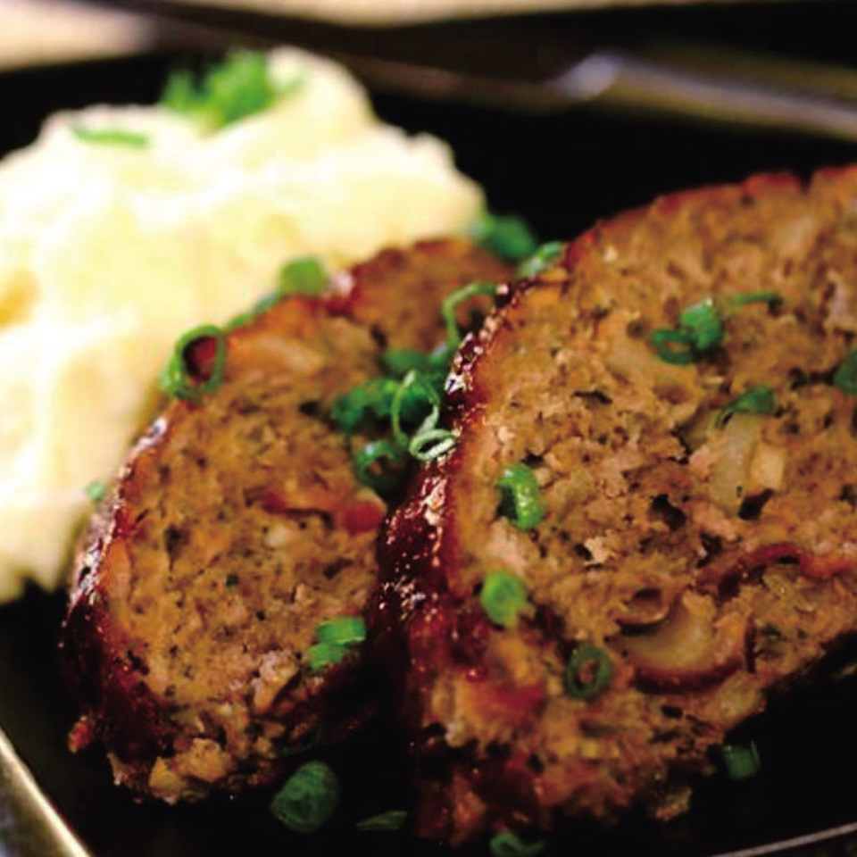

Recipe for Air Fryer Meatloaf

Description:
This is a delicious meal, and very quick to make. Follow the instructions below and make it today!
Ingredients
- 1 pound lean ground beef
- 1 small onion, finely chopped
- 1 large egg, lightly beaten
- 3 tablespoons dry bread crumbs
- The rest...
Steps
- Preheat an air fryer to 392 degrees F (200 degrees C).
- Combine ground beef, onion, bread crumbs, thyme,
egg, salt, and pepper in a bowl. Knead and mix thoroughly.
Transfer mixture to a small loaf pan. Smooth the top, press in mushrooms,
and coat with olive oil.
- Roast meatloaf in the preheated air fryer until nicely browned, about 25 minutes.
An instant-read thermometer inserted into the center should read at least 165 degrees F (72 degrees C).
- Let meatloaf rest at least 10 minutes before slicing into wedges and serving.
Go back to main page